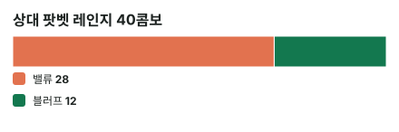

안녕하세요. A02에서 MDF(상대 블러프를 막으려면 우리 레인지에서 지켜야 하는 최소 비율)를 배웠죠. 오늘은 그 기준을 리버의 실제 핸드 한 판에 대 봐요.
"탑페어는 있는데, 상대가 팟만큼 질렀다." 손이 떨리는 그 순간이에요. 머릿속 MDF는 "절반은 지켜야지, 탑페어면 지키는 쪽이잖아"라고 말해요. 그런데 상대가 들고 있을 핸드를 직접 세어 보면 답이 달라질 수 있어요.
이 글에서 배울 것
- 리버 팟벳에 블러프만 이기는 핸드(블러프캐처)로 콜할지, 상대 벳 레인지를 밸류·블러프 콤보로 세어 정하는 순서
- MDF가 레인지 기준선이라 핸드 하나의 콜·폴드를 대신 정해 주지 못하는 이유
- 콜 EV를 (블러프 비중 − 필요 에퀴티) × 콜한 뒤 팟으로 읽는 법
오늘의 핸드
Hero (BB · 100BB)


프리플랍
상대(BTN) 2.5BB 오픈 → SB 폴드 → Hero 콜
팟 5.5BB
플랍 · 팟 5.5BB


Hero 체크 → 상대 2.75BB 벳(하프팟) → Hero 콜
Hero 탑페어. 보드에 하트 2장이라 상대에게 플러시 드로우가 있을 수 있어요.
턴 · 팟 11BB


Hero 체크 → 상대 4.5BB 벳(팟의 40.9%) → Hero 콜
리버 · 팟 20BB


Hero 체크 → 상대 20BB 벳(팟벳) → Hero는 콜? 폴드?
하트는 안 들어왔어요. Hero는 여전히 탑페어예요.
결론부터 말할게요. 오늘 가정한 상대라면 폴드가 이득입니다. 콜하면 한 번에 평균 2BB씩 잃어요.
MDF는 콜 쪽을 가리키는 것 같은데 왜 폴드인지, 다섯 단계로 따라가 볼게요.
1단계. 콜하려면 몇 번 이겨야 하나 (필요 에퀴티)
필요 에퀴티 = 20(Hero 콜) ÷ (20(원래 팟) + 20(상대 벳) + 20(Hero 콜)) = 20 ÷ 60 = 33.3%
3번 중 1번만 이기면 본전이에요. 3번 콜하면 20BB씩 60BB를 내고, 1번 이기면 콜한 뒤 팟 60BB를 통째로 받으니까요. 팟벳이면 팟이 얼마든 이 숫자예요(B15).
2단계. MDF가 말하는 것 — 그리고 말하지 않는 것
MDF는 "절반은 지켜라"
MDF = 20(원래 팟) ÷ (20 + 20(상대 벳)) = 50%
팟벳에는 Hero 레인지의 절반을 지켜야, 상대가 아무 핸드로나 팟벳해서 이득을 보지 못해요(A02).
그래서 탑페어는 콜처럼 보여요
리버까지 체크·콜로 온 Hero 레인지에 K 페어, 8 페어, 빗나간 하트 드로우, 작은 페어가 섞여 있다고 가정해 볼게요(연습용 가정). 그 가정이라면 K♣T♣ 탑페어는 위쪽 절반 쪽이에요. "절반을 지켜야 하니 탑페어는 콜"이라는 생각이 여기서 나와요.
그런데 MDF가 말하지 않는 것
MDF는 상대 손을 하나도 모를 때 "아무 두 장 블러프"를 막는 기준선이에요. 상대가 실제로 이 벳에 블러프를 얼마나 섞는지는 MDF 공식 어디에도 없어요.
이게 무슨 뜻이냐면, 상대 벳의 속을 들여다볼 수 있다면 그게 MDF보다 우선이에요. 그래서 다음 단계에서 상대 벳을 직접 세요.
3단계. 상대 레인지를 콤보로 세기 (가정 레인지 기준)
오늘은 상대가 이 리버에 팟벳하는 핸드를 아래처럼 가정할게요. 레인지를 목록으로 만드는 법은 I27에서 배웠죠.
이 목록 밖의 핸드로는 팟벳하지 않는다고 봐요. K8 같은 다른 투페어나 33·22 셋, Hero와 비기는 KT, Hero가 이기는 K9 이하 K 페어, 보드 3·2로 생긴 휠 드로우(A4·A5·54 같은 것)까지 모두요. 특히 비기는 핸드와 Hero가 이기는 밸류가 없다는 가정 덕분에 아래 4단계의 계산이 깔끔해져요.
밸류 (Hero를 이기는 핸드)
| 핸드 | 콤보 | 왜 이 숫자? |
|---|---|---|
| AK | 8 | A 4장 × K 2장 |
| KQ | 8 | K 2장 × Q 4장 |
| KJ | 6 | K 2장 × J 3장 |
| JJ | 3 | J 3장 중 2장 고르기 |
| 88 | 3 | 8 3장 중 2장 고르기 |
| 합계 | 28 |
💡 빨리 세는 팁: K는 보드에 K♥, Hero 손에 K♣ → 상대가 쥘 수 있는 K는 2장. 그래서 K와 Q는 2 × 4 = 8, K와 J는 보드에 J가 1장 있으니 2 × 3 = 6. 페어는 남은 3장 중 2장을 고르는 방법이 3가지라 3이에요(I32의 6 → 3 → 1).
KQ가 왜 밸류냐고요? 둘 다 K 원페어지만, 다섯 장을 만들어 보면 Hero는 K K J T 8(보드 J를 키커로 씀), 상대는 K K Q J 8이에요. 첫 키커 Q > J로 상대가 이겨요. AK도 같은 이유로 A 키커가 이겨요.
KJ는 투페어(K와 J), JJ·88은 셋이라 탑페어를 이겨요.
블러프 (Hero가 이기는 핸드) — 빗나간 하트 플러시 드로우
A♥Q♥, A♥T♥, A♥9♥, A♥6♥, A♥5♥, A♥4♥, Q♥T♥, Q♥9♥, T♥9♥, 9♥7♥, 7♥6♥, 6♥5♥ → 12콤보
전부 페어가 없어서(가장 센 게 A 하이) K 페어인 Hero가 이겨요.
Hero 카드가 지우는 것, 안 지우는 것
Hero의 K♣는 밸류를 줄여요. K♣가 없었다면 남은 K가 3장이라 AK·KQ·KJ가 더 많았을 거예요. 반면 T♣는 하트 블러프를 하나도 안 지워요. 블러프 목록의 T는 전부 T♥니까요. 이렇게 우리 카드가 상대 콤보를 지우는 효과(블로커)는 고급 E01에서 다뤄요.

4단계. Hero 에퀴티 = 이기는 콤보 ÷ 전체 콤보
가정에서 비기는 핸드를 뺐으니, Hero는 밸류에 다 지고 블러프에 다 이겨요. 그래서:
Hero 에퀴티 = 블러프 12 ÷ (밸류 28 + 블러프 12) = 12 ÷ 40 = 30%
이 30%는 곧 상대 벳 레인지 안의 블러프 비중이에요. 블러프캐처의 승률은 "상대가 벳 중에 블러프를 얼마나 섞었나"와 같은 숫자예요.
5단계. 비교하고, 돈으로 바꿔 보기
| 숫자 | |
|---|---|
| 필요 에퀴티 | 33.3% |
| Hero 에퀴티(블러프 비중) | 30% |
30% < 33.3%, 모자라요.
콜의 평균 손익 = 0.3 × 40(지금 팟) − 0.7 × 20(콜) = 12 − 14 = −2BB
10번 콜하면 3번 이겨 120BB를 벌고, 7번 져서 140BB를 잃어 −20BB예요. 이길 때 돌려받는 콜한 뒤 팟은 60BB지만, 그중 20BB는 Hero 콜이라 순수하게 버는 돈은 40BB예요. 폴드하면 더 넣지도 받지도 않으니, 폴드가 한 번에 2BB씩 이득이에요.
한 줄로 읽기
이 식은 한 줄로 정리할 수 있어요. 에퀴티 × 40 − (1 − 에퀴티) × 20을 풀면 에퀴티 × 60 − 20이고, 20은 60의 3분의 1이니 (에퀴티 − 1/3) × 60이에요. 벳하는 쪽의 (폴드율 − 알파) × (팟 + 벳)과 같은 모양이고, 그 식은 A03에서 다뤄요.
콜 EV = (블러프 비중 − 필요 에퀴티) × 콜한 뒤 팟 = (0.3 − 1/3) × 60 = −2BB
블러프 비중이 본전선보다 조금 모자라도, 콜한 뒤 팟이 60BB나 되니 그 차이가 2BB로 커져요.
왜 그럴까: MDF가 콜을 말하는 건 "블러프 3분의 1"을 전제할 때라서
MDF와 "블러프 3분의 1"은 같은 균형의 두 얼굴
MDF 50%가 콜을 가리키는 건 아무 이유 없이 그런 게 아니에요. 상대가 팟벳에 블러프를 딱 3분의 1 섞는다면, Hero 블러프캐처는 콜해도 폴드해도 본전이에요(필요 에퀴티가 3분의 1이니까요). 그때는 MDF만큼 지켜도 Hero가 손해 볼 일이 없어요.
그러니까 "MDF만큼 지켜라"는 말은 상대가 이 균형만큼 블러프를 섞는다고 볼 때 맞는 말이에요. 상대가 그보다 덜 섞으면, 블러프캐처는 콜할 때마다 손해라 전부 접는 쪽이 이득이에요.
팟벳 블러프캐처의 본전선은 블러프 3분의 1
1단계에서 팟벳 콜의 필요 에퀴티는 33.3%였어요. 블러프캐처의 에퀴티 = 블러프 비중이니까, 상대 팟벳 레인지의 블러프가 3분의 1이면 딱 본전이에요. 벳하는 쪽이 블러프를 이만큼 섞어야 하는 이유는 A05에서 배워요.
오늘 상대는 12 ÷ 40 = 30%로 그보다 덜 섞었어요. 그래서 K♣T♣는 접는 쪽이에요(덜 지켜도 되는 때는 A07에서 다뤄요).
이게 무슨 뜻이냐면
"탑페어라서 콜"도, "MDF가 콜이라고 해서 콜"도 아니에요. 오늘 K♣T♣는 상대 블러프만 이기는 핸드라서, 결정은 오직 상대 벳 속 블러프 비중에 달려 있어요. 탑페어라는 이름은 이 결정에 들어갈 자격만 줄 뿐이에요.
자주 하는 실수
실수 1. "MDF가 50%니까 탑페어는 무조건 콜" MDF는 레인지 전체의 기준선이지, K♣T♣ 한 장의 콜 허가증이 아니에요. 오늘 상대에게는 콜할 때마다 2BB씩 잃었어요.
실수 2. 블러프 콤보를 "느낌상 많다"로 어림하기 "하트 드로우가 많으니까 블러프가 많겠지"라고 생각하기 쉬워요. 그런데 직접 세면 빗나간 하트 드로우는 12콤보, 밸류는 28콤보였어요. 드로우 이름이 많아도 무늬가 정해진 핸드는 콤보가 1개씩이라 생각보다 적어요. 밸류는 숫자 조합이라 4 × 2처럼 커지죠.
실수 3. 이기면 받는 돈을 60BB로 세기 "콜하고 이기면 팟 60BB를 가져오니까"라며 0.3 × 60 − 0.7 × 20처럼 세는 실수예요. 60BB 안에는 Hero가 낸 콜 20BB가 들어 있어서, 이렇게 세면 콜이 실제보다 좋아 보여요. 이길 때 순수하게 버는 돈은 원래 팟 + 상대 벳 = 40BB로 세요.
"블러프캐처를 다 접으면, 상대가 블러프를 늘리지 않나요?"
좋은 질문이에요. 그럴 수 있어요. Hero가 이 상황에서 늘 접는다는 걸 상대가 알아채면, 상대는 빗나간 핸드로 팟벳을 더 자주 해서 그 틈을 노릴 수 있어요.
그래서 MDF보다 덜 지키는 건 상대가 블러프를 덜 섞는다는 근거가 있는 동안만 해요. 상대가 블러프를 늘리는 신호가 보이면 다시 기준선 쪽으로 돌아와요. 이 줄다리기는 A07에서 자세히 다뤄요.
숫자가 뒤집히는 지점
기준은 두 가지예요.
- 블러프 비중: 상대 벳 레인지에서 블러프가 차지하는 몫이 필요 에퀴티 33.3%를 넘으면 콜로 바뀌어요
- 벳 크기: 벳 크기가 바뀌면 필요 에퀴티가 어느 쪽으로 움직이는지 보세요
문제 1·2에서 직접 확인해 보세요.
선생님의 한마디
리버 큰 벳에 블러프캐처를 들고 있으면 이 순서로 봐요.
- 필요 에퀴티부터 — 팟벳이면 3번 중 1번
- 상대 벳 레인지를 밸류·블러프로 나눠 세기 — 우리 카드가 지우는 콤보도 빼고
- 블러프 비중 vs 필요 에퀴티 — 모자라면 폴드, 넘으면 콜
"블러프 같아서" 콜하는 습관은 2번을 건너뛴 거예요. 그 습관이 왜 손해인지는 A26에서 다뤄요.
연습 문제 (같은 보드, 같은 Hero 핸드)
에퀴티 계산기: 내 카드를 고른 뒤 [콜 수익] 칸에 지금 팟(상대 벳 포함)과 콜 금액을 넣어 확인해요. 상대 레인지 콤보 세기는 직접 해요.
문제 1. 상대가 리버에 하프팟 10BB만 벳했어요. 상대 레인지는 오늘과 같은데, Hero 핸드가 K♣T♣가 아니라 K♣T♥라면? (밸류는 그대로 28콤보예요.)
정답 보기
폴드. T♥가 블러프 목록의 A♥T♥·Q♥T♥·T♥9♥ 세 콤보를 지워서 블러프가 9콤보로 줄어요. Hero 에퀴티 = 9 ÷ (28 + 9) = 9 ÷ 37 = 24.3%, 필요 에퀴티 = 10 ÷ (20 + 10 + 10) = 25%. 아슬아슬하게 모자라요. 콜 손익 = 0.24324 × 30 − 0.75676 × 10 = 7.3 − 7.57 = −0.27BB. K♣T♣였다면 블러프 12콤보, 에퀴티 30%라 같은 하프팟에 콜이었어요. 우리 카드 한 장이 블러프를 지우면 결론이 뒤집힐 수 있어요.
문제 2. 리버 팟벳 20BB 그대로인데, 이 상대는 빗나간 드로우를 더 넓게 써서 블러프를 15콤보 섞는 사람이라면?
정답 보기
콜. Hero 에퀴티 = 15 ÷ (28 + 15) = 15 ÷ 43 = 34.9% > 33.3%. 콜 손익 = 0.34884 × 40 − 0.65116 × 20 = 13.95 − 13.02 = +0.93BB. 블러프가 몇 콤보만 늘어도 결론이 뒤집혀요. 그래서 리버 블러프캐처 결정은 블러프 몇 콤보에 민감해요.
핵심 정리
- 블러프캐처의 에퀴티 = 상대 벳 레인지 속 블러프 비중(블러프 ÷ 전체 콤보)
- 콜 여부는 블러프 비중 vs 필요 에퀴티로 정해요. 팟벳이면 본전선은 3분의 1
- MDF는 상대 벳 구성을 모를 때의 레인지 기준선이에요. 셀 수 있으면 세는 게 먼저
- 콤보를 셀 때는 우리 카드가 밸류를 지우는지, 블러프를 지우는지 둘 다 봐요
- 콜 EV = (블러프 비중 − 필요 에퀴티) × 콜한 뒤 팟. 작은 차이도 큰 팟에선 커져요
정리하며
오늘은 리버 팟벳에 K♣T♣ 탑페어로 콜할지 따졌어요.
MDF 50%만 보면 콜 같았지만, 가정한 상대 벳을 직접 세니 밸류 28 대 블러프 12, 블러프 비중 30%였어요. 팟벳 본전선 33.3%에 못 미쳐서 콜하면 한 번에 2BB씩 잃고, 그래서 폴드가 맞았죠.
실전에서 가져갈 건 하나예요. 블러프캐처로 큰 벳을 맞으면 "MDF가 뭐라고 하나"보다 "이 벳에 블러프가 몇 콤보 섞였나"를 먼저 세요.
다음 글 A05에서는 자리를 바꿔 벳하는 쪽에서 봐요. 리버에 벳할 때 밸류 몇 개에 블러프를 몇 개 섞어야 상대 블러프캐처가 오늘 같은 쉬운 폴드를 못 하게 되는지를 다뤄요.
AI 작성 · 숫자는 계산 검증 · 가정 레인지 기준 (솔버 결과 아님) · 리버 마지막 결정이라 콜 손익이 최종 결과